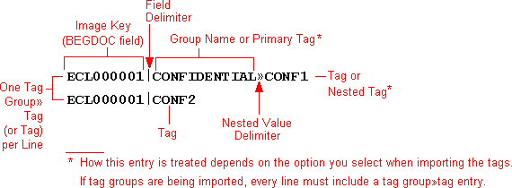
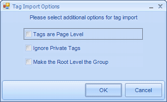
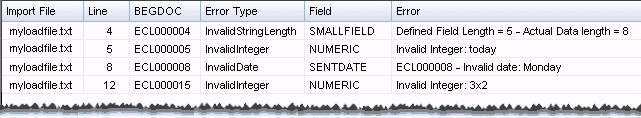

Open the Eclipse Admin module and log in as an administrator.
On the Case Management ribbon, select Import > Import Data.
The Import Data window will appear:

Importing third party case data is broken down into several steps. The import process is executed through the
Open the Eclipse Admin module and log in as an administrator.
On the Case Management ribbon, select Import > Import Data.
The Import Data window will appear:
Before you begin, review
Click on a section, below, to expand the section and complete the tasks contained within.
If your import file is open in another application, for example, a .CSV file is open in Microsoft® Excel, close the file and the application.
In the Import Data screen, click the Step 1. Select Source tab.
Select the managing client and case into which data is to be imported.
Job Name: If desired, replace the default job name with a name of your own choosing. This job name is used in the Import-Job History for the case. The log file path cannot be changed.
Import File:
Enter the full path to the needed import file. Alternatively, click the
 button and navigate to and choose the needed
file. Files may be any of the following types:
button and navigate to and choose the needed
file. Files may be any of the following types:
Document-level data: .CSV, .DAT, .DLF, .DII, or .TXT
Page-level data: .DLF, .LFP, or .OPT
Document-level text (extracted text) files: .LST
|
|
Note: To import multiple files at once (for example, a service bureau has provided multiple files for a case), select any one of the files to be imported now. Additional files will be selected in Batch Import. |
Number of sample records: Select a sample of 1, 15, or 100 records. The initial lines in the import file are evaluated in order to display the number of records (documents and/or pages) specified here. If the selected number of records is not defined within the lines that are evaluated, then the sample will be smaller than specified.
First line is a header: Select this option if the first row in the import file contains column titles instead of data. (Some file types, such as .OPT, will select this option automatically.)

Encoding: Select the character set to be used. Common encodings are available for selection.
|
|
Note: For each case, make sure that the same encoding option is used for the load file containing the case metadata (such as .DAT, .DLF, .DII, or .TXT file) and the corresponding image load file (.OPT or .LFP) for the case. |
Sample Data: Review the excerpt of data from the import file.
The columns in the table will differ, depending on which type of file is being imported. If you are importing an LFP or OPT file, columns will be similar to this figure.

Delimiters: Eclipse includes default delimiters based on file type,
as listed in the following
A box, □, represents a non-printing character.
“NA” indicates the delimiter is not applicable to the file type.
|
File Type |
Field |
Quote |
Newline |
Multi-VAlue |
Merged Field |
Nested VAlue |
|
.CSV |
, (0044) |
" (0034) |
(none) |
; (0059) |
(none) |
(none) |
|
.DAT |
□ (0020) |
þ (0254) |
® (0174) |
|||
|
.DII |
||||||
|
.DLF |
(none) |
NA |
(none) |
|||
|
.LFP |
, (0044) |
" (0034) |
(none) |
|||
|
.LST |
, (0044) |
" (0034) |
(none) |
|||
|
.OPT |
, (0044) |
" (0034) |
(none) |
|||
|
.TXT |
, (0044) |
" (0034) |
(none) |
If the data imported includes delimiters other than the standard types, change the delimiters to match the file. For more information on custom delimiters, see below.
In the needed delimiter field, select Custom. (You will need to scroll to the bottom of the delimiter list.)
In the Create Custom Delimiter dialog box, click the Characters or ASCII Values option, depending on how you will specify the delimiter character(s).
If you select Characters, enter the character(s) in the top field under the Characters option. Separate more than one character with a space. The ASCII value for each character appears in the bottom field.
If you select ASCII Values, enter the ASCII value(s) for the needed character(s) in the top field under the ASCII Values option. Separate more than one value with a space. The character corresponding to each value appears in the bottom field.
When finished, click OK.
Ignore any delimiters that are not pertinent to your load file. (The entries in this area will be ignored if they do not apply to your load file.)
Delimiter options include:
Field: Select the character that separates each field.
Quote: This optional delimiter typically marks the beginning and end of a field (as in .CSV files).
Newline: Select the character that signifies the start of a new line in the load file.
Multi-Value: Select the character that separates values within multi-value fields (TEXT_TM fields).
Merged Fields: Eclipse Admin allows you to merge multiple fields. For example, you may be importing a case in which two fields were used for a large amount of text.
If you want to merge fields, but also want an indicator of the original field separations, specify the delimiter here. The delimiter will be included in the merged data to identify the original field delineation(s).
Nested Value: If you are importing tags (including nested tags) from a .TXT or .CSV file, select the delimiter that identifies the nested tags.
When delimiters have been defined, review the Sample Data to ensure it appears as intended.
Date Format: Select the date format that most closely matches the dates in your import file. For example, if your file includes dates in the format of dd-mm-yyyy, select the D/M/Y option. Also note the following:
Dates to be imported must be in a common date format. (For example, 27-09-2009 or 27 Sept 2009.)
If you are importing data from a .DLF file, the format must be Y/M/D.
Partial dates will not be imported (for example, 09/2009 or Sept 2009
Batch Import: To select additional files to import, complete the following steps.
Files must be of the same type and have the same fields as defined in the file specified in the Import File field.
Determine whether you are adding a single file, a directory of files, or multiple recursive directories.
In the Batch Import area, click the Add button.
Navigate to and select the needed file(s), then click OK. Use Shift+click or Ctrl+click to select a contiguous or non-contiguous set of files, respectively.
If needed, repeat steps b and c to locate and select additional files.
Review the files listed in the File Name list. If a file should not be imported, click the file in the list and then click Remove.
Nested Value: If you are importing tags (including nested tags) from a .TXT or .CSV file, select the delimiter that identifies the nested tags.
|
|
Regarding imports from LFP files: The import process imports/updates only those records specified in the LFP. Therefore, related documents are updated only if they are specified in the LFP file. Not all LFP commands are supported. Supported commands include: AN, FT, IM, OF, OI, OT, VN. Unsupported commands are ignored. |
If you are importing document data, match (map) the
data fields defined in the imported file to the fields defined for the
case in
A field must be mapped to the case BEGDOC field.
Some fields in the import file can be omitted
(not mapped) if needed. For example, the import file may include a
Word Count field that is not needed in the
More than one field in the import file can
be mapped to a single field in the case. For example, the import file
may have two fields to define an author’s name (First Name, Last Name).
In the
|
|
Note: If you are importing image data (such as from an .LFP or .OPT file), matching of database fields may not be required. |
If you are importing document data, match (map) the data fields defined in the imported file to the fields defined for the case in Eclipse Administration. Note:
A field must be mapped to the case BEGDOC field.
Some fields in the import file can be omitted (not mapped) if needed. For example, the import file may include a Word Count field that is not needed in the Eclipse case.
More than one field in the import file can be mapped to a single field in the case. For example, the import file may have two fields to define an author’s name (First Name, Last Name). In the Eclipse case, a single field may be used for this information (Name).
|
|
Note: If you are importing image data (such as from an .LFP or .OPT file), matching of database fields may not be required. See Map image data and text files. |
Several options relate to field mapping. For example, Eclipse allows you to correct the file path information in the import file so that the data will be correct in your Eclipse case.
The following procedures comprise this step of the import process:
There are many ways to map fields, but the exact field needed may not be your case. You can quickly add the new field as you are mapping.
In the Import Data screen, click the Step 2. Map Fields tab.
Evaluate the Import Field listing to determine which fields will be included in the import.
If there are no matching fields, click in the Eclipse Field column, click the down arrow and select Create New Field.

The New Field creation window will open.

Complete the definitions for the field. For details
on field definition options, refer to
Eclipse Admin can attempt to match the fields based on the field name. For example, if the input data contains a column called IMGKEY and the case contains a field named IMGKEY, it will automatically line up the source and destination field.
To auto-select fields:
After
completing
To match by field name, ensure that your imported data includes field names in the header and that First line is header is selected in the Step 1 tab. In the Import Data screen, click the Step 2. Map Fields tab.
Next to Auto-Select,click the  button.
button.
Evaluate the matching to determine if:
the auto-matching does not meet your needs, and/or
Some fields cannot be matched (in which case, the word Select in the Eclipse Field column will be red).
|
|
Note: For auto-selected matching, make sure that one of the import fields is matched to the BEGDOC field defined for the case. If importing from a Summation .DII file, make sure the Summation FULLTEXT field is matched to the Eclipse EXTRACTEDTEXT field |
To manually match the fields:
In the Import Data screen, click the Step 2. Map Fields tab.
Evaluate the Import Field listing to determine which fields will be included in the import.
For each field to be imported, click in the Eclipse Field column and choose the database field you want to match to the import field. The list shows the field name and type to assist you with matching.
Repeat the above step for all fields to be included.
|
|
Note:
|
If you will be importing multiple load files separately (not as a batch), you can set up needed field mapping, save a template, then use the template to easily map fields for additional imports.
On the Step 2 tab of the Import Data screen, map fields using one of the previously described procedures.
Click Save Field Template.
In the Save Template File dialog box, navigate to an appropriate location for the template, enter a template file name, and click Save. An XML-based field template is created. Field mapping and path correction data are maintained in the template.
After creating a field template as described in the previous procedure, use it as follows:
On the Step 2 tab of the Import Data screen, click Load Field Template.
In the Load Template File dialog box, navigate to the needed template, select it, and click Open. Mapping selections and path corrections will be made according to the template.
Review mapping details and make changes if needed.
If you are using/importing any of the following items, matching of database fields will be as discussed in the following paragraphs.
Image data (such as from an .LFP or .OPT file)
.LST file for text files
.DAT, .DLF, or .CSV file using a file path in the EXTRACTED TEXT field (path pointing to the location of text files)
.LFP files
Eclipse Admin will automatically define the Image Path. This selection cannot be changed. The BEGDOC field must be mapped by the user.
Optionally, if applicable, two additional fields can be mapped:
IM lines: If boundaries specified in IM (Load Image Master Record) lines include a “C” as shown in the following example, then a relationship will be created if you map a BEGATTACH field (and that field references the BEGDOC of the parent document):
IM,000010,C,0,@001;IMG_0001;000010.tif;2,0
OF lines: Original File (OF) for EDD Image lines correspond to NATIVE fields in Eclipse. If your .LFP file includes OF lines, you must map a NATIVE field if you want to import that information.
.LST and .OPT files
Eclipse Admin will automatically define the Image Path; the BEGDOC field (and others) must be mapped by the user.
.DAT, .DLF, or .CSV files
Eclipse Admin will automatically define the Image Path; the BEGDOC field (and others) must be mapped by the user.
If a path is used to indicate the location of text files, the Import Text from Path option must be selected to indicate that a path is being used in place of the text itself. See the following figure.

You can easily check any file path information (for
images, native files, and/or text) contained in the load file and change
it to “point to” the correct location for the files being added to the
To change path information for files used in
If you are working with a .DAT, .DLF, or .CSV file that includes a file path in the EXTRACTED TEXT field instead of the text itself, ensure that the Import Text from Path option is selected.
On the Step
2 tab of the Import Data screen, locate a mapped field that includes
a file path/file name (image or native path, or extracted-text file path),
click  next to the mapped details. Eclipse will check the path and file name.
next to the mapped details. Eclipse will check the path and file name.
If the specified file exists at the specified location, a success message will display. Click OK and continue.

If the specified file does not exist at the specified location, an error message will display.

To correct file paths, click OK in the error message and complete the Edit Path dialog box as follows:

Load File Path: Review the path information to determine the part of the path that is incorrect and needs to be replaced.
Replace Text: Enter the incorrect portion of the load file that you identified in step a.
With: Enter the correct file path information. (For images, this can be the path itself or a volume name that represents the correct path details. If entering a volume name, precede and follow the volume name with the “at” sign, @, as in @VOL1@.)
Imported Path: Review the corrected path for accuracy.
If needed, click to update the path in the Imported Path field.
For volumes (image path only), the complete path represented by the volume (and the portion of the load file path that you are not replacing) displays beneath the Imported Path field.
To verify that the path is correct, click . If the file is not found, check your work and make corrections as needed.
When the validation message states File found!, click OK.
|
|
Tip: You can copy path details from the path in the Load File Path field and paste it in the Replace Text field. If the path you enter is not valid, check your entries carefully. For example, look for missing or extra backslashes. |
Repeat these steps for each type of path in the load file.
Complete the following steps to define how data will be added to a case.
On the Step 2 tab of the Import Data window, in the Select Mode section, select the way in which data is imported into the Eclipse case.

Import Options
|
Import Option |
|||
|
Option |
Description |
||
|
Append All Records |
Use this option to add new records to a new or existing database.
The load file must contain a BEGDOC, DOCID, or IMAGEKEY field. |
||
|
Overlay/Append |
Load File “Pet” Field |
|
|
|
(Before Import) |
(After Import) |
||
|
dog |
(blank) |
dog |
|
|
cat |
dog |
||
|
dog |
dog |
||
|
(blank) |
dog |
(blank) |
|
|
Overlay Only |
Use this option to update existing records.
|
||
|
Tag Import |
Use
this option to import tags and apply them to records in the |
||
Overlay Field to Match: If you select either of the Overlay options in step 1, select the field (BEGDOC) to be used for matching the load file records to the case records field.
For more information on Tag Import, see the below chart.
Tag details can be imported using a plain text file (such as a .CSV or .TXT file) containing image keys and tag information for each record for which tags are to be applied. The following figure shows the content of a typical text tag-import file.

Tags defined in the import file will be created in the Eclipse case if they are not already defined for the case.
To import tags successfully, the issues in the following table must be addressed.
|
Issue |
Description |
|
|
File Format |
|
|
|
Wrong: |
ECL00001|CONFIDENTIAL»CONF1 ECL00001|CONF2 |
|
|
Right: |
ECL00001|CONFIDENTIAL»CONF1 ECL00001|CONFIDENTIAL»CONF2 |
|
|
Delimiters |
When
you complete
|
|
|
Overlay field |
When you complete Select import mode for data, make sure the Overlay Field to Match is set to the BEGDOC field. |
|
|
Import options |
Before performing the import, address the following:
These options are selected during Complete the Import. Undefined tag groups are placed in an “Imported Tags” group. |
|
Complete the following steps to select image handling options and correct the image path if needed.
Ensure that the Step 2 tab is selected on the Import Data screen.
Image Options: If you are importing data into a new case that contains no data, leave the default selection.

|
|
Important: If you are importing an .LFP file that does not include IM lines, these options do not apply. (That is, the file contains OT, OI, and/or FT, lines only.) In this case, leave the default selection and continue to the next step. |
For other types of load files, select one of the following options:
Create error if image exists: If the image key specified in the import file exists in the case, an error is logged and the image record is not created.
Overwrite and remove existing annotations: If the image key specified in the import file exists in the case, overwrite the record and eliminate any annotations (highlighting, mark-ups, and/or redactions) that were specified for the image.
Overwrite but retain existing annotations: If the image key specified in the import file exists in the case, overwrite the record and keep any existing annotations (such as highlighting, mark-ups, and/or redactions) that were specified for the image.
Skip existing images: If the image key specified in the import file exists in the case, leave the record for that image unchanged.
Image file
path: If the path defined in the load file for image files in the
load file is incorrect and you did not make corrections during field mapping,
click Edit File Path in the Image Options area and complete
When the validation message states File found!, click OK.
If text files are being imported as part of the load file, complete the following steps.
Ensure that the Step 2 tab is selected on the Import Data window.
If you are working with a .DAT, .DLF, or .CSV file that includes a file path in the EXTRACTED TEXT field instead of the text itself, ensure that the Import Text from Path option is selected.

If the path defined in the load file for text
files is incorrect and you did not make corrections during field mapping,
click Edit File Path in the Text Options area and complete
If the path defined in the load file for native files is incorrect and you did not make corrections during field mapping, complete the following steps.
Ensure that the Step 2 tab is selected on the Import Data window.
In the Native
Options area, click Edit Native
File Path and complete

Select the Index after process completes option to create the index used for text searching after the import process completes.

To skip indexing now (for example, to save time), do
not select the option. Indexes can be managed after data is imported as
explained in
As part of the import process, evaluate the import file for tags and/or redactions that do not match those defined for the case into which the data is being imported. To do so:
On the Step 2 tab of the Import Data window, in the Action area, select Pre-Process.
Click Submit.
When the pre-process is completed, click View Results.
In the Pre-process Results dialog box, evaluate each tab for problems.
Undefined tags are those that do not match tags in
your case. Tags that do match your case will be imported. After completing
Review the tags listed on the Tags tab of the Pre-Process Results dialog box, and the groups in the Tag Groups pull-down list.
Take the following steps as needed:
If suitable groups exist for all of the tags, skip to step 4.
If a new group is needed for some (or all) of the tags, go to step 3.
If you do not want to import one or more tags, leave the group as (not set) and skip to step 6.
To create one or more new tag groups for undefined tags:
Click
 on the right side of
the tab.
on the right side of
the tab.
In the Create Tag Group dialog box, enter a new tag group name and select needed group rules.
Click OK.
Repeat steps a - c for other new tag groups.
Continue with the next step.
For each undefined tag to be imported, click the tag, then select the needed group from the Tag Group list.
|
|
Tip: Right-click a tag to select the needed group. To apply the same selection to multiple tags, click the first tag, then Shift+click the last tag to select a contiguous set of tags or Ctrl+click other tags to select a non-contiguous set. |
Repeat step 4 for all tags to be imported.
Continue with other pre-processing tasks as
needed. If none exist, go to
Undefined redactions are those that do not match redactions in your case. Redactions that do match your case will be imported.
After completing
Review the redactions listed on the Redaction Categories tab of the Pre-Process Results dialog box. An ID of zero indicates that the redaction label is not found in the case.
Select the redactions you want to import and add to your case. For multiple redactions, click the first redaction, then Shift+click the last redaction to select a contiguous set of redactions or Ctrl+click other redactions to select a non-contiguous set.
When all needed redactions are selected, click Create Redaction Categories. An ID number will be assigned to all selected redactions.
Continue with other pre-processing tasks as
needed. If none exist, go to
The Pre-Process function evaluates the load file for
errors. After completing
In the Pre-Process Results dialog box, click the Load File Errors tab.
Review the error summary in the top portion of the screen.
To see the load file content for a particular error:
Select the error.
Select the Preview Load File option.
Review the actual load file content in the bottom portion of the window.
Your action will depend on the number and type
of errors. For severe problems, correct the load file or obtain a new
one. For few or minor problems, continue with other pre-processing tasks
as needed. If none exist, go to
Once all aspects of the import are defined, import the data as follows.
Import settings can also be saved if desired.
On the Step 2 tab of the Import Data window, in the Action area, select Import.

Click Submit.
If you did not select Tag Import in the Select Mode section of the Step 2 tab, continue to the next step. If you are importing tags, see the sub-steps below:
The following message will display:

Select the needed options.
If you are importing tag group names, ensure that Make the Root Level the Group is selected; otherwise, tags will be imported to the group “Imported Tags.”
Progress will display on the Step 3 View Progress tab. Read the information as it is presented.
If needed, when the import is complete, take one or both of the following actions:
If the status for a load file is shown as “Completed with errors,” right-click the load file and select View Error File. A text file containing error details will open.
Click the View button to see overall details about the import. The import log (text) file opens; this file lists the fields that were mapped, options, selected, and start/stop information for each load file.
Next, click the Step 4. Verify tab.
Evaluate records. Possible activities include:
Reviewing the Documents list
Reviewing document details
Deleting a document or page
Managing the volume used to define the image path
Viewing images
Eclipse validates the data being imported. For example, if a FixedLengthText field was set at five characters, data for the field exceeding that value would not be imported. If data problems are detected, the Errors tab will appear in red and the number of validation errors will be included. To evaluate validation errors:
Click the Errors tab.
Click Display Errors to view error details. The following figure shows a simple example:

To view errors in load-file format, click Create Loadfile View.
As needed, export a load file that contains only the records with errors by clicking Export and completing the Export dialog box. For document-based errors, a .DAT file will be created; for page-based errors, an .LFP file will be created. Errors can be corrected in the exported load file, which can then be re-imported (overlaid) into the case.
Related Topics